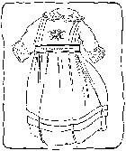
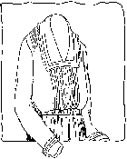
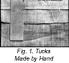
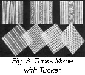
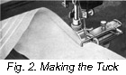

1926—The New-Way Course in Fashionable Clothes-Making
Lesson 5—Tucks and Tucker
Tucks and the Tucker
We have a surprise for you! You are going to learn how to use the tucker—how to make the daintiest of little tucks without all the work and time-waste of long rows of hand-stitching! We know you're going to enjoy this lesson more than any other so far, and you have reason to—for you've really just begun your course and now you are all ready to learn how to make tucks on your machine, and how to use them for dainty trimming-purposes.
A tuck, you know, is a fold of material stitched through both thicknesses of the fold. When the material is very, very fine tucks are usually made by hand; but now that the sewing machine has revolutionized home-sewing, the tucker does all the work when it comes to applying tucks to the heavier materials.
But just a moment before we begin our lesson on the tucker— perhaps you have no sewing machine and are just as anxious as the woman-who-has to learn all about tucks and how to make them. Well, we're going to tell you about it right now!
Then both you, and the woman with the machine, will know how to make hand tucks when you find it necessary in the creation of pretty dresses and blouses.
For the many things where tucks are used, the tucker is one of the home dressmaker's greatest aids.
Tucks Made By Hand
- Make tucks by hand when the material is very thin and fine and you are making infant's clothes and very dainty blouses or underthings.
- Fold the material exactly where you wish the edge of your tuck to be, and mark carefully the widths from the edge where you wish the stitching to be.
- Use needle and thread as fine as the material will allow and sew along the line you have just marked with very fine small running stitches. If you wish, you may add an occasional back stitch to give the tuck strength to resist wear and washing.
- Without fine stitching that is always straight, tucking has no beauty either as a trimming or a finish. Be sure you do not sacrifice beauty on the altar of haste and impatience! Cut a marker like illustration to mark the line of stitching and turning to aid you in hand tucking. (Fig. 1.)
Tucks Made With the Tucker
Whether the tucks you are going to make are the finest pin tucks, or those three-quarters of an inch in width, they can be very easily made without any basting whatever. That's the whole beauty of attachment-machine sewing—it eliminates so much of the unnecessary work that kept our grandmother up late into the night when she was making daughter's graduation dress—or perhaps a fluffy little frock that was even more important.
The next time you are at one of the shops, glance at some of the dainty French lingerie and some of the pretty tailored blouses. You will find that a great many of them boast nothing but tucks as their trimming. Somehow, the vogue for tucks and ruffles never dies away—and it seems that they never will as long as women love the frilly, feminine things to wear.
But to be really attractive tucking must be made well— otherwise it defeats its own purpose and instead of becoming a neat trimming it becomes an ugly diversion to the other charms of the garment. In the following paragraphs we are going to each you just how to use your tucker so that you can make beautiful tucks with the least waste of time and effort.
- Find your tucker in your box of attachments (it will have the word "Tucker" written on it) and substitute it for the presser foot on your sewing machine. Here again we refer you to your book of machine instructions so that you will know just how to adjust the tucker.
- Take the material you wish to tuck—we suggest that you use an odd piece of soft lawn or nainsook as it is easy and pleasant to practice with—and crease it for the first tuck as you would for hand tucking.
- Without basting or one bit of hand sewing whatever, insert the material under the creaser and between the blades of the tucker. The part of the material to be tucked should be on top.
- Now work your sewing machine exactly as you would for plain stitching, and when the entire length to be tucked has been covered you will find that you not only have made a perfect tuck, but the tucked attachment has actually marked the place on the next tuck! This saves you the trouble and time of measuring the space between tucks.
- Fold down again on crease made by tucker, and proceed with second tuck.
- To prevent material from being marked when you are ready for the last tuck, push back the lever on the tucker.
As in everything else, practice is essential in tucking. Do not attempt to become an expert tucker in one evening; practice for two or three evenings before you even try to make finished samples. The more you practice, the more sure of yourself you will be later on when we come to the lessons in actual clothes-making.
Cross-tucking makes a very attractive trimming, and when you have learned how to use the tucker you will be able to make cross-tucking quite easily. Simply make new lines of tucking across those you have already made, crossing them in any way you wish as long as you keep them all uniform. Group tucks are also very attractive and easily made as shown in Fig. 3. You see, there are many interesting things you will be able to do with your tucker when you master this lesson and know how to use it without trouble.
Lessons 4 and 5
Questions
- What is the difference in an open and closed bound seam?
- How is a French fell seam made?
- When would you use a slot seam?
- What kind of seam should be used for sheets?
- (a) On which side of the garment is the tailored seam made?
(b) The fell seam? - What stitch is used to hold the edge of the flannel seam flat against the material?
- (a) Where is the lap seam used?
(b) What other seam does it resemble? - 8. How may stretching of bias seams be prevented?
Samples of the following should be sent in for inspection in the envelope provided for the purpose. If samples are not correctly done, corrected work will be returned with full explanation. In the case of COMPLETED GARMENTS, the work will be returned to the student for use. Mail your samples with your answers to Quiz Questions and be sure to put name and address and student number on the outside of the envelope. Don't make your samples larger than 5 inches long and 3 inches wide.
Homework Problems
- Prepare and send in a sample of a fell seam.
- Make a sample of a French seam and send it in.
- Make a sample of a hand-made tuck not wider than ½ inch.